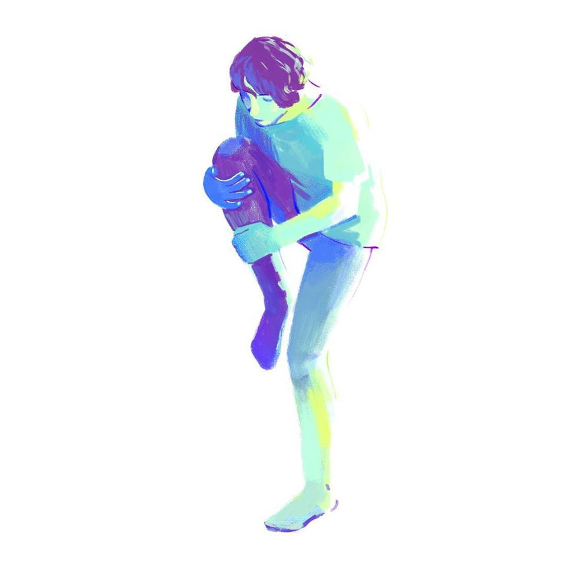

3-track Piece
Released: 27th July 2018
‘Reaching’ is a three track piece that follows a more personal theme then my other work, exploring themes of exploration of body and gender. This piece more than any feels like a self portrait.
Copyright of Dee Egan.
All Rights Reserved.